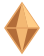
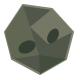

Crystal Run
Ambil kristalnya, Hindari asteroidnya, dan Pulang sebagai legenda
Sisa waktu00:45
Skor total000
Nyawa
Level 1 · Orbit KeplerJelajahi yang belum terjamah
Pesawat Nomad · Siap lepas landasSistem online
Analog kiri · Seret arena
Dash siap

Kristal energi
+10 poin. Combo hingga ×3.

Asteroid
−1 nyawa. Hindari atau dash.
Kapsul perisai
+1 nyawa saat terluka.